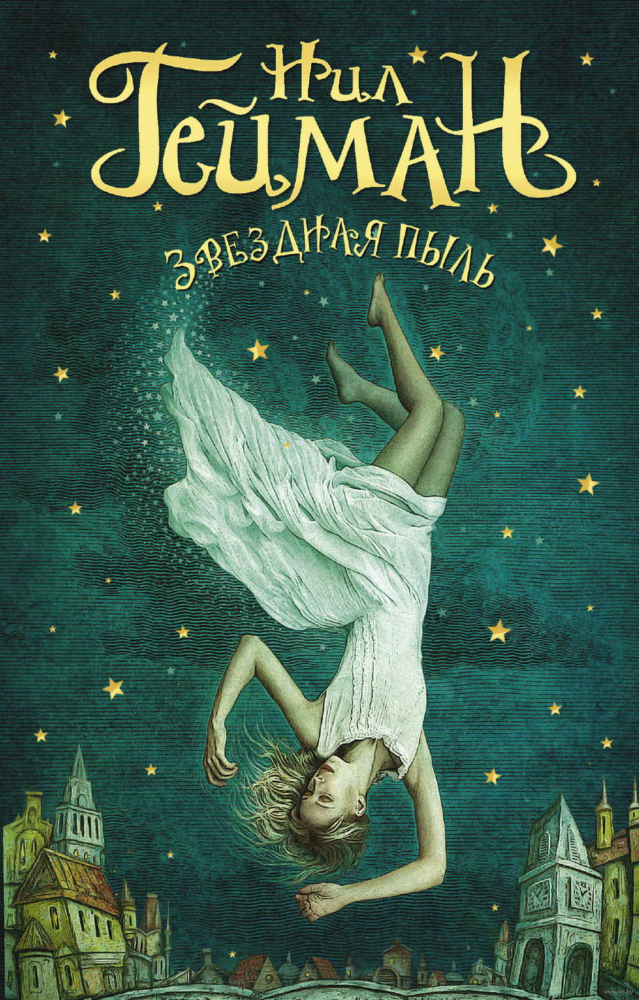

Фэнтезийная мелодрама для всей семьи «Звездная пыль» – сказка, полная приключений, волшебства и настоящей любви. Молодой человек Тристан пообещал своей возлюбленной достать звезду, упавшую за другую сторону зачарованной стены. Эта стена отделяет деревеньку от чудесной и неизведанной страны, где происходят самые невероятные события...
 "Звездная пыль" - это полная иронии притча о поиске настоящей любви. Здесь есть и викторианская романтика, и куртуазный единорог, и готические черно-белые призраки… Книга рождает ощущение, что наш мир расположен совсем рядом с волшебным: шагни в сторону - и ты уже в старой доброй Англии. Роман был с восторгом встречен критикой и сразу стал бестселлером. Автор получил за него мифопоэтическую премию за произведение для взрослых, а режиссер Мэтью Вон создал на основе романа блокбастер с Робертом Де Ниро, Мишель Пфайфер и Клер Дэйнс в главных ролях.